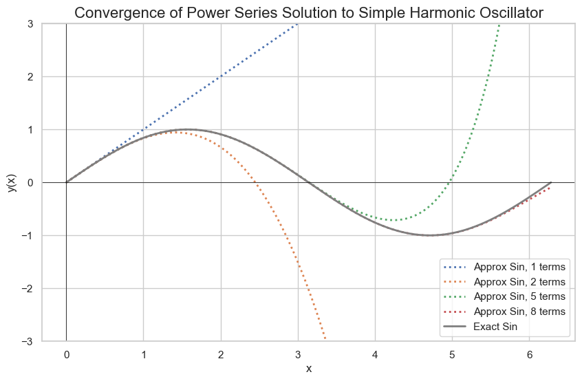

For differential equations with variable coefficients, it may not be feasible or even possible to get a closed form solution.
However, we may be able to easily express it as an infinite series, similar to Taylor series in basic calculus.
Power Series
Definition
A power series is an infinite series of the form:
$$y(x)=\sum_{n=0}^{\infty}a_n(x-x_0)^n$$
where \(a_n\) is the coefficient and \(x_0\) is the center of the series. Often, we will center our series around 0.
Theory
We can assume that the differential equation has a solution that can be represented as a power series.
We then substitute that power series into the differential equation.
Interchanging summation and differentiation is allowed, given certain convergence criteria which we will assume.
In order for two polynomials to be equal, they must have the same coefficients for each power. We can use this fact to equate coefficients and solve for our series.
Example
In order to demonstrate the power series method, let's use an example which has an easily recognizable closed form solution.
Sine and cosine can be represented as infinite series.
$$y''+y=0$$
From earlier, we know the general solution is
$$y(x)=c_1\sin(x)+c_2\cos(x)$$
Now, let us forget that solution and just assume that our solution has the form of a power series:
$$y(x)=\sum_{n=0}^{\infty}a_nx^n$$
Let us take derivatives since we need to be able to substitute in for those as well.
$$y'(x)=\sum_{n=1}^\infty a_{n}nx^{n-1}$$
$$y''(x)=\sum_{n=2}^\infty a_n n(n-1)x^{n-2}$$
Because we lose the constant term after each differentiation, the starting index changes; otherwise, we would be saying that we have negative powers in our series.
Since we want to align series, it is often convenient to have them indexed the same.
Since it is an infinite series, we can adjust the starting index, provided we are consistent.
To make the substituion more obvious, let's do a change of variables
i=n-2 or n=i+2
$$\sum_{n=2}^\infty a_n n(n-1)x^{n-2}\rightarrow \sum_{i=0}^\infty a_{i+2} (i+2)(i+1)x^{i}$$
It's convention to keep the indexing variable the same, so we'll instead just call i as n.
$$y''(x)=\sum_{n=0}^\infty a_{n+2} (n+2)(n+1)x^{n}$$
Plugging our series into the differential equation:
$$\sum_{n=0}^\infty a_{n+2} (n+2)(n+1)x^{n}+\sum_{n=0}^{\infty}a_nx^n=0$$
Since these are two infinite sums with the same index, we can combine them:
$$\sum_{n=0}^\infty (a_{n} + (n+2)(n+1)a_{n+2})x^n=0$$
For two polynomials, they are the same if each coefficient is the same.
How is this relevant? Well, we can write 0 as
$$0=0+0x+0x^2+\dots$$
Thus, each coefficient in our infinite sum must equal 0.
$$a_{n+2}(n+2)(n+1)+a_n=0\hspace{1cm}\forall n\geq 0$$
We get the recurrance relationship
$$a_{n+2}=-\frac{a_n}{(n+1)(n+2)}$$
At this stage, it becomes a matter of pattern recognition.
Since we have a relationship between n and n+2, it might naturally lend itself to splitting between even and odd cases.
Even n:
$$a_2=\frac{-a_0}{2\times 1}=-\frac{1}{2}a_0$$
$$a_4=-\frac{a_2}{4\times 3}=\frac{1}{4\times3\times2\times1}a_0$$
$$a_6=-\frac{a_4}{6\times 5}=\frac{1}{6\times5\times4\times3\times2\times1}a_0$$
odd n:
$$a_3=\frac{-a_1}{3\times2}=-\frac{1}{6}a_1$$
$$a_5=-\frac{a_3}{5\times 4}=\frac{1}{5\times4\times3\times2}a_1$$
$$a_7=-\frac{a_5}{7\times 6}=\frac{1}{7\times6\times5\times4\times3\times2}a_1$$
It is useful if we can recognize a pattern for writing a generic
$$a_n=f(n)a_0$$
In our case, we have the pattern
For even \(n \geq 2\):
$$a_n=\frac{(-1)^{n/2}}{n!}a_0$$
For odd \(n\geq 3\):
$$a_n=\frac{(-1)^{n/2-1}}{n!}a_1$$
$$y(x)=a_0(1-\frac{x^2}{2}+\frac{x^4}{4!}+\dots)+a_1(x-\frac{x^3}{3!}+\frac{x^5}{5!}+\dots)$$
Which is equivalent to
$$y(x)=a_0\cos(x)+a_1\sin(x)$$
From there, we can further determine \(a_0\) and \(a_1\) if we have initial conditions.

Harmonic Oscillator Series Approximation
import matplotlib.pyplot as plt
import numpy as np
import math
import seaborn as sns
sns.set_theme(style='whitegrid')
# Define the number of terms to be considered
terms = [1,
2, 5, 8]
def sin_approx(x,n):
accum = 0
for i in range(0,n):
accum += (-1)**i/(math.factorial(2*i+1))*(x**(2*i+1))
return accum
# Define the x range
x = np.linspace(0, 2*np.pi, 1000)
# Define the exact solutions
# cos_x = np.cos(x)
sin_x = np.sin(x)
# Initialize the figure
plt.figure(figsize=(10,6))
# Loop over the number of terms
for n in terms:
# approx_sin = [sin_approx(i,n) for i in x]
# print(n, approx_sin)
plt.plot(x, [sin_approx(i,n) for i in x], label=f'Approx Sin, {n} terms', linewidth=2, linestyle='dotted')
# Plot the exact solutions
# plt.plot(x, cos_x, label='Exact Cos', color='black', linewidth=1)
plt.plot(x, sin_x, label='Exact Sin', color='tab:grey', linewidth=2)
# Customize the plot
plt.title('Convergence of Power Series Solution to Simple Harmonic Oscillator')
plt.xlabel('x')
plt.ylabel('y(x)')
plt.ylim([-3,3])
plt.axhline(0, color='black', linewidth=0.5)
plt.axvline(0, color='black', linewidth=0.5)
plt.legend()
# Show the plot
plt.show()
Convergence
When working with power series solutions to differential equations, it's crucial to determine the set of values for which the series converges to a meaningful function. This leads us to the concepts of radius of convergence and interval of convergence.
Radius of Convergence
The radius of convergence (R) of a power series
$$\sum_{n=0}^\infty a_n(x-c)^n$$
is the distance from the center c to the nearest point where the series fails to converge.
Interval of Convergence
The interval of convergence is the set of all
x values for which the power series converges. It's determined by finding the values of
x for which the series is absolutely convergent.
The Frobenius method is an extension of the power series method and is particularly useful when the point \(x_0\) is a regular singular point.
It assumes a solution of the form
$$y(x)=\sum_{n=0}^\infty a_n(x-x_0)^{n+r}$$
where r is a scalar, called the index. When solving, we also determine the value of r.
Solving with Frobenius Method
The steps are as follows:
Substitute the series, just like in the power series method
Equate coefficients to get a recurrence relation for \(a_n\)